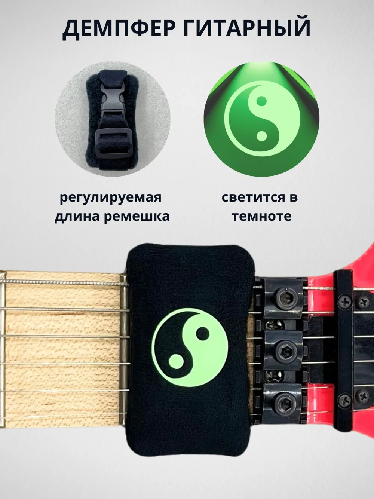

Нажми на большую фотографию для полноэкранного просмотра
СВЕТЯЩИЕСЯ
Рисунки, которые светятся после зарядки ярким светом. Конструкция предназначена для приглушения нежелательных призвуков струн во время игры.
О свечении: после яркого освещения рисунок может светиться особенно заметно до 5 минут, затем постепенно угасает в течение следующих 30 минут. Результат зависит от освещения и продолжительности зарядки.
В галерее: вид изделия, конструкция, совместимость и инструкция по регулировке. Возможные варианты оформления можно уточнить в магазине или сообществе.
ЧИСТЫЙ ЗВУК. ТОЧНАЯ НАСТРОЙКА.
Гитарный демпфер BigNest помогает приглушить нежелательные призвуки и дребезг струн при игре, записи и репетициях. Подходит для электрогитары, акустической гитары и бас-гитары; эффективность зависит от конструкции грифа, настройки прижима и техники игры.
КАК ИСПОЛЬЗОВАТЬ
Разместите демпфер у верхнего порожка, отрегулируйте ремешок и силу прижатия под инструмент и приём игры. Подходит для экспериментов с тэппингом, слэпом и другими техниками, где требуется контроль лишнего звучания струн.
СВОИ ИДЕИ.
СВОИМИ РУКАМИ.
Демпферы BigNest выполнены с регулируемым ремешком и застёжкой. В фотогалерее есть инструкция по изменению длины, примеры установки на разные грифы и дополнительные материалы об устройстве.